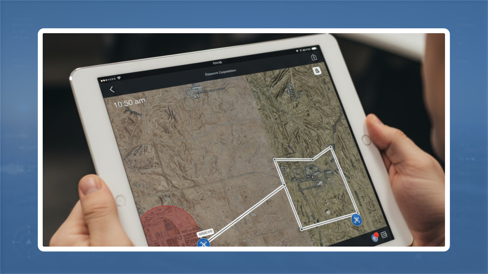

Case Studies
A closer look at projects where the work needed more than polished screens. These stories cover the problem, trade-offs, decisions, and product thinking behind the final interface.

UI Design Library for Aampe
Aampe's AI personalization platform serves growth teams at companies like Swiggy and Glide. Over 13 months, I built a complete design system from the ground up.
AI
Rhythm Healthcare Platform
Redesigning a clinician's daily workflow on a remote patient monitoring platform processing 1.2M+ transmissions a year, and hearing "you made my work easier."
Health Care
First Responder Airspace
AiRXOS (part of GE Aviation) builds the airspace management platform used by 200+ US public safety agencies. I designed across web, iPad, and iPhone as the sole designer.
AviationSelected Projects
View MoreA tighter look at six representative projects. The full archive lives on the Works page.


Explorations
Side experiments, small concepts I build to think through ideas. Open any to see the concept and current thinking.
FreeStyle
A design-system auditor for the browser, scan, inspect, replace, and audit colors, typography, and accessibility on any webpage.
Developer ToolsBrowser Workflow Tool
A small utility experiment designed around reducing repeated browser actions and keeping everyday workflows lighter.
ProductivityBhor: Weather, Decoded
A menu-bar weather app that tells you what to do with the day, not just the numbers. Live weather, decoded into plain-language actions.
Consumer AppConvenience Store for India
A complete product and service concept for a modern Indian convenience store experience, shaped around local buying behavior.
Hyperlocal CommerceAI Tuition for Students
A learning concept exploring how AI can help students practice, ask better questions, and understand topics at their own pace.
EdTechHuePrint
Design token kits for AI-builders, pick a brand kit, paste it into your AI tool, and get branded UI instantly.
Design Tools